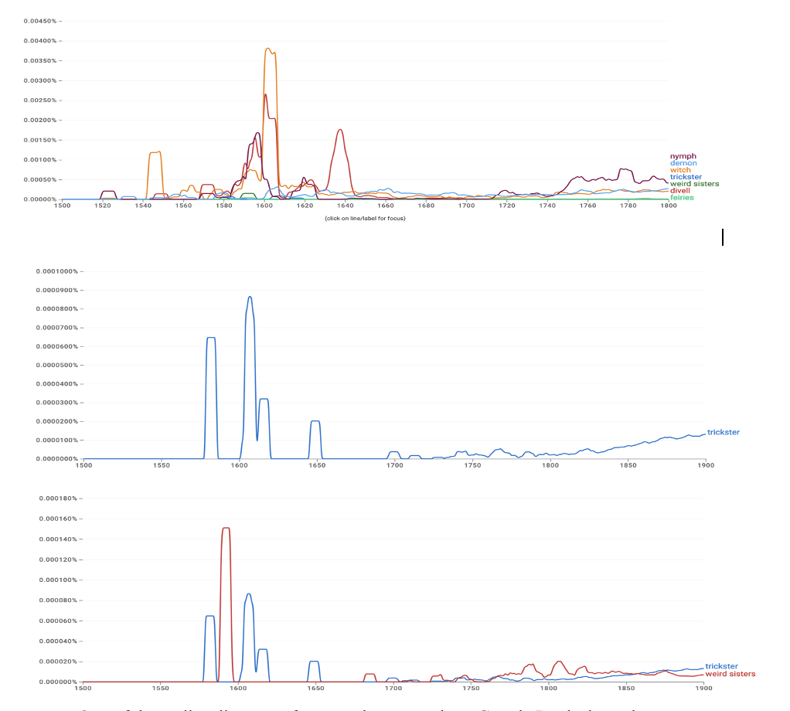
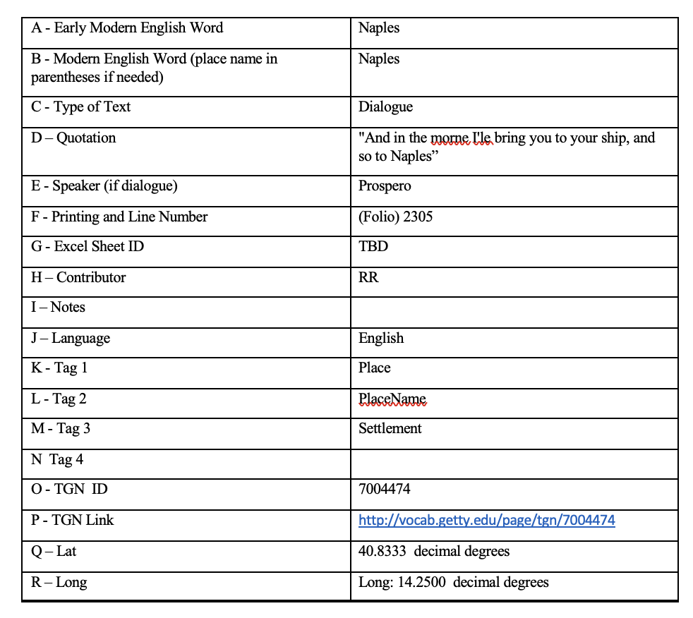
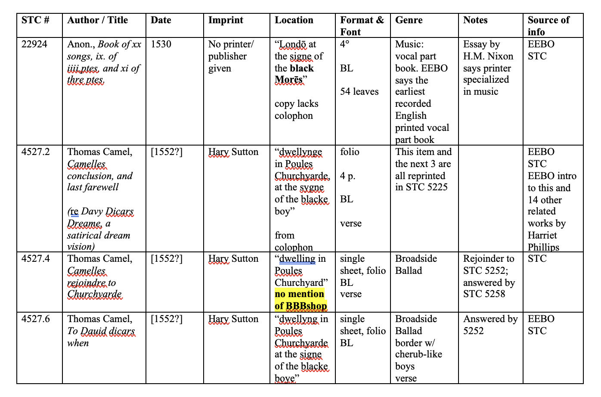

Early Modern Data
SAA Minneapolis Seminar
30 March 2023
Information collected and arranged for later presentation or study.
Some guiding questions
- Is data always anachronistic? Is it a modern layer we add to our study of the past or something more integrated?
- Is data—either historically or today—primarily about discovering new or hidden information?
- Does data-driven work have any claim to objectivity? How is data “taken” (Drucker) or “situtated” (Lavin)?
- How do the forms and formats of our data (tables, XML, bag of words, NLP tags, metadata) alter the field of possibility for EM scholarship?
- When there are gaps and problems in our data, who or what is being excluded?
- What are the differences between data that adds additional context and turning our objects of study (e.g. texts) themselves into data?
- Is data better suited to the claims made in book history than in other parts of the discipline?
- How can information, extracted into a table or another form, help us to access the things we most want to study: a theme, a presence, a life, a mind? Does data get in the way?

(Aboluwade 3)

(Hornback 2)

(Ormsby 3)

(Wayne 2)